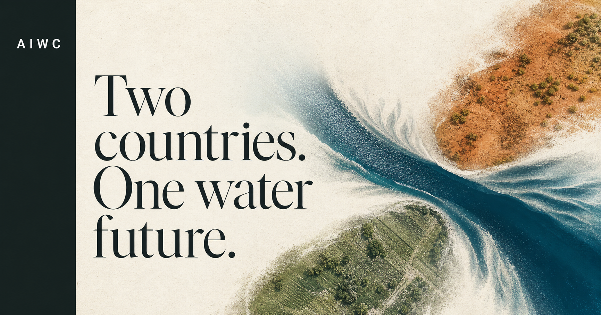

Groundwater · citizen science
MARVI
Local volunteers measure water levels, rainfall and quality, then turn shared evidence into decisions communities can use.
Explore the program AIWCAustralia India Water Centre
AIWCAustralia India Water CentreBilateral water science · Established 2020
We connect people, knowledge and action across Australia and India to address the water challenges neither country can solve alone.

A bilateral platform for practical, long-term cooperation on water.

Australia · India · Shared water knowledge
From dryland catchments to monsoon-fed river systems, the Centre connects different environmental experience through one long-term scientific partnership.
Why the Centre exists
Floods and droughts, climate change, rapid urbanisation, pressure on farms and declining water quality connect the experiences of both nations.
AIWC brings researchers, policy-makers, industry and communities together to learn with—and from—one another, turning common ground into practical cooperation.
About the CentreHow we work
Research informs teaching, training changes practice, and communities help shape the questions.
Joint inquiry across groundwater, rivers, catchments, water quality, climate resilience and digital water tools.
→Connected learning that brings policy, governance, agriculture, catchments and systems thinking into one curriculum.
→Practical capacity building for young water professionals, government agencies and community water stewards.
→WaterWise, Water Talks and community dialogue that turn specialist knowledge into shared action.
→Programs in focus
Groundwater · citizen science
Local volunteers measure water levels, rainfall and quality, then turn shared evidence into decisions communities can use.
Explore the program
Leadership · capacity
An immersive program for early-career water leaders, combining technical knowledge, communication, policy and mentorship.
Explore the program
Infrastructure · exchange
Australian and Indian specialists share practice in risk assessment, emergency readiness, regulation and inclusive management.
Explore the programAlso explore Village Groundwater Cooperatives, a farmer-led model for managing groundwater as a shared resource.
A centre without walls
Researchers, practitioners and institutional leaders make AIWC a working network—sharing methods, mentoring emerging leaders and building enduring relationships.
Latest from the Centre
Start a conversation
Interested in research, education, professional exchange or partnership with the Centre?
Contact AIWC